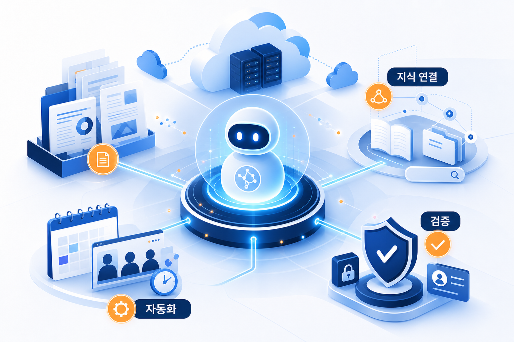
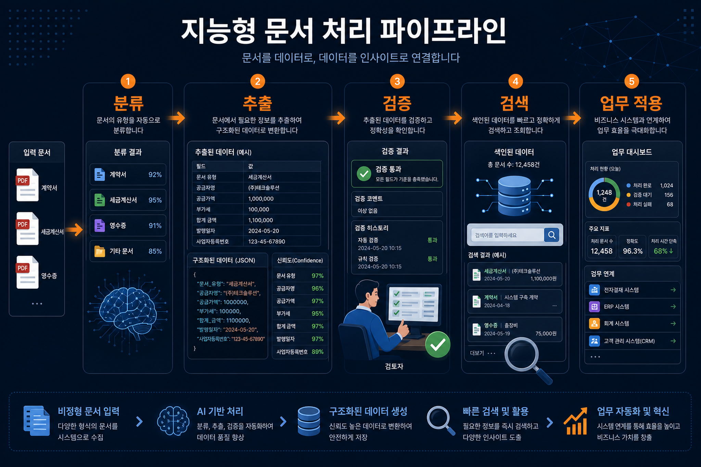
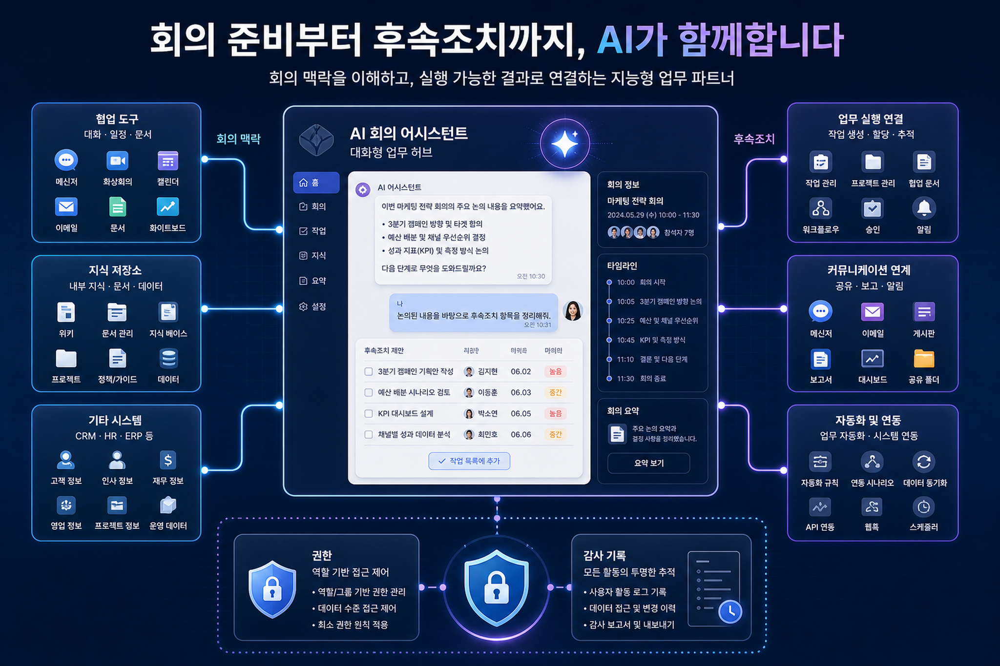

핵심 트렌드 분석
업무 지식의 에이전트화
로켓 클로즈 사례는 소유권·평가·정산 업무처럼 문서와 지역 규칙이 얽힌 영역에서, 지식 검색과 업무 판단 보조를 하나의 흐름으로 묶는 방향을 보여줍니다.
문서 처리의 의미 이해 확대
지능형 문서 처리 글은 단순 문자 추출보다 분류, 추출, 정규화, 검증, 신뢰도 점수를 함께 고려하는 구조를 강조합니다.
협업 맥락의 대화형 연결
회의 준비와 후속조치 보조 글은 회의 기록, 영상, 메시지, 기업 데이터 저장소, 업무 실행 커넥터를 하나의 대화형 업무 공간에 연결하는 패턴을 설명합니다.
조직 작업 방식의 재설계
프로페셔널 서비스 사례는 인공지능 도구 추가보다 작업 단위, 맥락 제공, 품질 판단, 피드백 주기를 다시 설계하는 접근을 제시합니다.
기술 변화의 의미
관찰된 변화는 특정 모델 성능보다 “업무 맥락을 어디까지 안전하게 연결할 수 있는가”에 초점을 둡니다. 문서, 회의, 내부 지식, 업무 행동이 연결될수록 권한·감사·검증 설계가 기술 선택만큼 중요해집니다.

| 관찰된 사실 | 근거 출처 | 기업 의사결정 포인트 |
|---|---|---|
| 문서 처리 파이프라인이 분류와 추출뿐 아니라 검증, 신뢰도, 검색 연계를 포함합니다. | 지능형 문서 처리 파이프라인 블로그 | 업무 자동화 후보를 고를 때 정확도뿐 아니라 예외 처리와 사람 검토 기준을 함께 설계해야 합니다. |
| 회의 맥락과 후속조치가 여러 협업 도구와 기업 저장소를 가로질러 연결됩니다. | 회의 준비·후속조치 보조 블로그 | 커넥터 연결 범위, 권한 상속, 감사 기록, 외부 협업 데이터 처리 정책을 먼저 확정해야 합니다. |
| 에이전트형 업무 사례는 내부 지식과 절차를 자연어 상호작용에 연결합니다. | 로켓 클로즈 사례 블로그 | 고객 대응·심사·계약·정산 같은 지식 집약 업무에서 데이터 품질과 책임 경계를 검토할 기회가 있습니다. |
기업 적용 관점과 한국 기업 시사점
적용 기회
- 반복 문서 검토와 근거 검색이 많은 심사·정산·고객지원 업무
- 회의 전후로 맥락 수집과 액션 정리가 반복되는 프로젝트 조직
- 내부 지식과 외부 협업 도구가 분리되어 검색 시간이 큰 조직
검토 기준
- 권한이 다른 데이터 원천을 한 에이전트가 조회할 때의 접근 통제
- 추출 결과의 신뢰도 기준과 사람 검토 단계
- 업무 액션 실행 전 승인, 되돌리기, 감사 기록
한국 기업 관점에서는 개인정보, 내부 문서, 협력사 자료, 외부 회의 데이터가 한 흐름에 연결되는 순간 규정 준수 검토가 선행되어야 합니다. 수집본만으로 특정 산업별 규제 적합성은 판단하기 어려우므로, 실제 적용 전에는 법무·보안·개인정보 담당자의 별도 검토가 필요합니다.
리스크와 거버넌스 고려사항

데이터 경계
회의, 문서, 메시지, 저장소가 연결될수록 사용자별 접근권한과 데이터 보존 정책을 동일한 수준으로 맞추어야 합니다.
검증 경계
문서 추출이나 답변 생성 결과가 업무 판단으로 이어질 때, 신뢰도 점수와 사람 검토 기준을 운영 규칙으로 남겨야 합니다.
비용 경계
검색, 문서 처리, 장문 요약, 커넥터 호출이 늘어나면 사용량과 비용 관측 지표가 필요합니다. 이번 수집본만으로 구체 과금 영향은 확인 필요입니다.
실행 전략
고정된 단계별 로드맵 대신, 이번 수집본에서 직접 관찰되는 항목 중심으로 실행 점검표를 제안합니다.
- 첫째, 문서·회의·업무 지식 중 연결 가치가 가장 큰 원천을 한 가지로 좁혀 검증합니다.
- 둘째, 모델보다 권한·감사·사람 검토 기준을 먼저 문서화합니다.
- 셋째, 업무 액션 실행은 조회·초안·승인·실행을 분리해 점진적으로 열어야 합니다.
- 넷째, 성공 지표는 응답 품질뿐 아니라 검색 시간 감소, 예외 처리율, 검토자 수정률, 비용 단위로 봐야 합니다.
출처와 데이터 상태
- 로켓 클로즈의 에이전트형 소유권 업무 최적화 사례
- 프로페셔널 서비스 조직의 인공지능 기반 작업 방식 재설계 사례
- 생성형 인공지능 서비스 기반 지능형 문서 처리 파이프라인
- 회의 준비와 후속조치 보조 흐름
이미지 생성 프롬프트는 같은 폴더의 프롬프트 기록 파일에 보존했습니다.